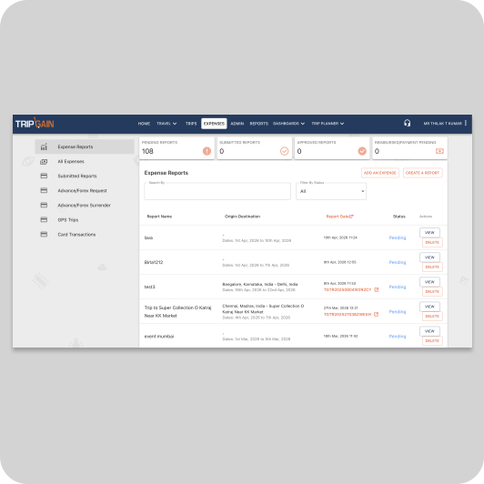

Why this redesign happened.
TripGain is an enterprise travel and expense management platform used by organizations to manage travel bookings, reimbursements, employee claims, approvals, and finance operations.
As part of TripGain's larger product revamp, the expense submission workflow was identified as one of the most operationally complex experiences within the platform.
The redesign focused on improving workflow clarity, reducing operational friction, and creating a more connected reimbursement experience.


Leading the design,
end to end.
As the lead designer, I owned the end-to-end redesign of the expense submission experience, collaborating closely with product managers, developers, finance teams, and support stakeholders.
Mapping the
reimbursement journey.
TripGain supports three distinct types of expense reports, each with unique submission and approval requirements.
Multiple stakeholders and approval stages mean visibility and communication are critical throughout the experience.
Where the friction lived.
The existing workflow created operational friction across reporting, approvals, and reimbursements — users struggled with visibility, communication, repetitive actions, and policy understanding.
Listening before
designing.
The research focused on identifying friction across expense submission, approvals, reimbursements, and report management workflows.
- F·01Users prioritized approval confidenceEmployees wanted assurance reports would be approved without rework.
- F·02Repetitive workflows increased frictionManual entry and inefficient handling slowed recurring submissions.
- F·03Communication gaps delayed workflowsUsers relied on external tools to resolve approval queries.
- F·04Limited visibility reduced trustUsers struggled to track report status and pending actions.
- F·05Policy feedback lacked clarityWarnings appeared late with limited guidance, creating confusion.
What we set out
to achieve.
The redesign focused on improving workflow clarity, operational efficiency, and reimbursement visibility across the expense submission journey.
Simplify recurring expense submission workflows
Improve report visibility and reimbursement tracking
Reduce repetitive manual effort during expense creation
Improve communication across employees, managers, and finance
Provide clearer policy validation and workflow guidance
Create a more transparent and manageable experience
A redesigned reimbursement experience that brings clarity, structure, and efficiency to every stage of the expense workflow.
A clearer dashboard for managing and tracking reports
The redesigned expense report dashboard improves report visibility, reimbursement tracking, and overall workflow management through a cleaner and more structured experience. The new design introduced improved dashboard hierarchy, advanced filtering, clearer approval and reimbursement status indicators, faster report search, simplified navigation, and better organization of travel and non-travel reports.
These improvements reduced visual clutter and made recurring expense management workflows easier to scan, track, and manage efficiently.

A connected approval journey with built-in collaboration
The expense report workflow was redesigned to improve communication, workflow visibility, and reimbursement tracking throughout the approval journey. The redesigned experience introduced in-report messaging and collaboration, activity logs for approval visibility, clearer expense hierarchy and tracking, contextual violation and weekend indicators, and simplified report actions and workflow management.
These improvements helped create a more transparent and connected reimbursement experience for employees, managers, and finance teams while reducing workflow friction during approvals and reimbursements.

Faster submissions across expense, mileage, and bulk flows
The expense creation workflow was redesigned to reduce manual effort and improve submission efficiency across expense, mileage, and bulk expense flows. The redesigned experience introduced OCR-supported receipt upload, structured expense forms, simplified mileage entry, bulk expense handling, and clearer form hierarchy to make recurring submissions faster and easier to manage.
The redesigned experience streamlined how users create, manage, and submit different types of expenses by reducing repetitive manual entry, simplifying mileage tracking, improving receipt handling, and enabling faster bulk expense submissions within a single workflow.

Transparent status across submission, approval, and reimbursement
The expense report workflow was redesigned to provide clearer visibility across submitted, approved, and reimbursed states throughout the reimbursement journey. The redesigned experience introduced contextual workflow banners, improved reimbursement visibility, clearer approval states, and better report tracking to help users easily understand the current status of their expense reports.
The redesigned experience helped users track report progress more transparently by improving status communication, reimbursement visibility, approval awareness, and workflow clarity across different stages of the reimbursement process.

Faster, more confident approval decisions
The manager approval workflow was redesigned to improve approval visibility, expense validation, and decision-making efficiency throughout the reimbursement process. The redesigned experience introduced structured approval requests, clearer expense hierarchy, contextual policy indicators, reimbursement visibility, and simplified approval actions to help managers review and process reports more efficiently.
The redesigned experience helped managers review, validate, and process expense reports more effectively by improving workflow clarity, simplifying approval actions, and providing better visibility into violations, reimbursement amounts, and employee-submitted expenses.

A streamlined verification flow for finance teams
Once a manager approves the report, it moves to the Finance Manager for verification.
Redesigned the Finance Manager expense verification flow to simplify how finance teams review and process employee expense reports. The new flow provides clear visibility into eligible reimbursement amounts, policy violations, and expense details in a single streamlined interface. Finance managers can quickly verify expenses, send reports back to employees for revision, or approve them for the next stage. Once verified, reports are seamlessly transferred to the Finance Admin for reimbursement processing, reducing manual effort and improving operational efficiency.

Closing the loop with faster reimbursement processing
Once the Finance Manager verifies a report, it arrives in the Finance Admin's queue for reimbursement.
Redesigned the Finance Admin reimbursement flow to streamline the final stage of expense processing. Once expense reports are verified by the Finance Manager, they are moved to the Reimburse Requests queue where Finance Admins can review approved amounts, add bank and UTR details, and complete the reimbursement process. The redesigned flow improves status visibility, reduces manual effort, and enables faster reimbursement processing.
